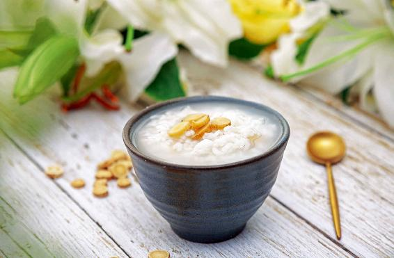
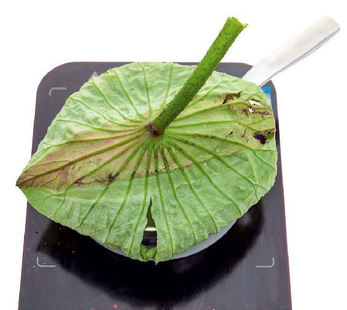
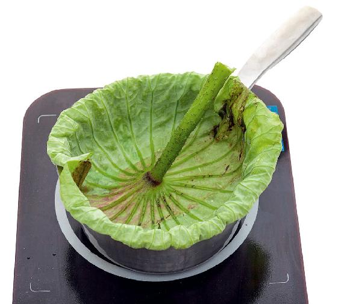
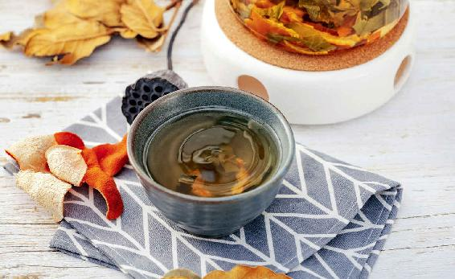

进入秋天之后，容易发生肠道问题，有的人是拉肚子，有的人是大便不成形。如果一年四季都这样，那就要好好来健脾、补脾了。
如果说平时还可以，就是到了立秋之后有大便不成形的症状，这是因为体内有了湿气。那么，如何调理呢？
首先，这时不能大补了，否则有可能让身体里的湿气排不出去。
其次，知道大便不成形是因为身体里有了湿气。那么，您要做的就是给身体助一把力，把湿气排出来。
人体排毒主要通过大便、小便和出汗。
立秋之后，由于人体毛孔逐渐闭合，身体内的湿气主要通过小便、大便来排出，所以立秋之后，一要坚持喝黄芪粥，能够补气健脾，对于体虚大便不成形的人很有帮助；二要喝荷叶茶或者荷叶粥。
荷叶是双向调节的，如果大便干结喝荷叶茶，它有通便的作用；如果大便不成形，喝荷叶茶能帮助身体尽快排出湿气，有效调节大便不成形，以及防止腹泻现象的发生。
荷叶粥做法一：您可以在煮粥的时候把荷叶放进去，或者在粥快要煮好的时候，把整张新鲜的荷叶覆盖在粥面上，不要盖锅盖，煮上两分钟以后，关火闷一会儿就可以喝了。



这样煮出来的荷叶粥很香，颜色有一点浅浅的绿色，有荷叶的味道。
荷叶粥做法二：也可以一开始煮的时候就放上荷叶，荷叶不要完全接触水面，而是像锅盖一样盖在锅的边缘上，当荷叶煮软了往下塌之后，您再换一张新的荷叶，直到粥煮熟为止。
这样煮出来的荷叶粥，能充分吸收荷叶的味道，颜色还更好看，荷叶的香气也是非常浓郁的。
荷叶茶做法：如果您没有时间煮荷叶粥或者买不到新鲜的荷叶，也可以用干荷叶泡水喝。
如果是大便不成形的朋友，您可以喝炒荷叶茶，生的干荷叶泡茶喝通便的效果比较好，而炒荷叶茶排水湿的效果比较好。
读者评论：荷叶粥，让人回味无穷
神珠：每到立秋，我都会去卖藕的商户那儿，买整张荷叶回来煮荷叶粥，淡淡的清香，让人回味无穷。
允斌解惑：湿气重的人可以常喝荷叶粥
心本无尘：三伏期间早上喝黄芪粥，下午喝荷叶茶或荷叶粥，可以吗？
允斌：可以的。
丽红营销师：荷叶粥可以一年四季喝吗？
允斌：湿气重的人可以常喝。
鳯~ ：喝荷叶茶总感觉胃不舒服，可以再加点什么吗？
允斌：荷叶加陈皮比较好，胃酸过少的人还要加山楂。
徐弘：秋天还可以喝荷叶茶吗？
允斌：用炒荷叶是可以的。
荷叶粥和荷叶茶都有一个好处，就是升举清阳。
什么叫升举清阳呢？人体有清阳和浊阴，清阳必须往上升；而浊阴必须往下降。
假如清阳不能往上升，我们的头部就得不到营养的供应，人就会感觉昏昏沉沉的，脸色也容易发黄；如果浊阴不往下降呢，水湿和废物就排不出去，人就会消化不良，吃一点东西肚子就胀胀的，或者打嗝、恶心，甚至呕吐。因此，我们要让清阳往上升，浊阴往下降。也就是说，要让人体的气往上提，让废物往下降而排出，只有这样，体内的水湿才能排出去。

荷叶就能帮助我们身体提升清阳，不仅可以调理我们的大便不成形，预防水湿引起的腹泻，而且对脾胃也有很好的调和作用。
荷叶是健脾胃的，但它并不补，因此就不用怕补过了让身体无法排毒。
荷叶为什么能健脾胃？完全是靠它升举清阳，帮助身体祛除水湿，从而让湿气不会困住我们脾胃的功能，这样就起到了健脾的作用。
立秋期间，用荷叶粥、荷叶茶调节大便不成形的症状时，不会有立竿见影的效果，甚至可能大便不成形的现象还会加重。其实，这是荷叶在帮助身体尽快排出水湿，所以您无须担心，只要身体的湿气排到位了，那么大便自然会恢复到正常状态。
在立秋节气和接下来的处暑节气，喝荷叶粥或荷叶茶还有一个好处——帮助身体降脂、减肥。
秋天来了，天气一寒冷，有些朋友的血压就容易升高，而荷叶有调节血压的作用。
在立秋节气和处暑节气喝一点荷叶粥或者荷叶茶对身体是一个很好的顺时保养。
读者评论：喝了荷叶茶，感觉身体变轻松了
琼文：这几年感觉身体代谢慢了，即便饿上一段时间，身体也不会瘦下来。没想到，喝了一个夏天的荷叶茶，身体反而一下子瘦了，至少瘦下来一圈。
兰兮：喝了荷叶茶，感觉身体变轻松了。脚踝有一个小疹子，居然也消失了，神奇！